Mis recetas del día a día
Cocinar siempre ha sido mi forma de desconectar y disfrutar del momento. En ¿Qué sopem? comparto mis recetas del día a día, aquellas que preparo en casa con cariño y que cualquiera puede hacer. Porque comer bien no tiene por qué ser complicado, solo hace falta ganas y tiempo para crear momentos que se disfrutan a fuego lento.
Galería de recetas
Imágenes de recetas y platos destacados
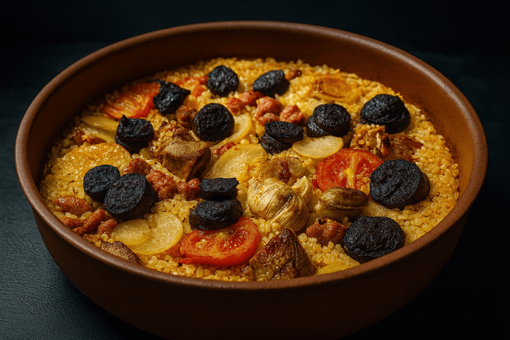 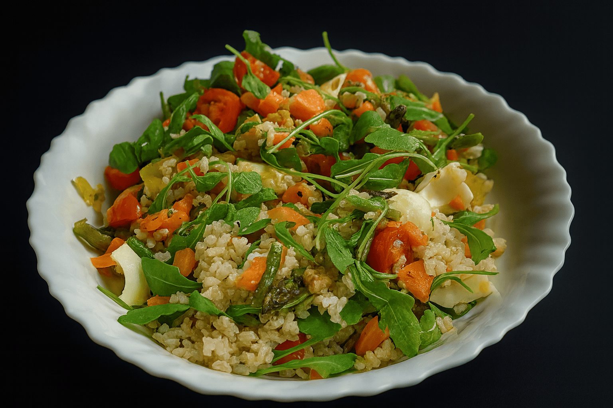 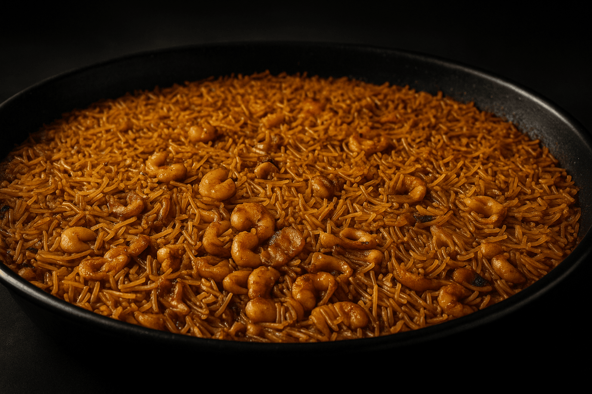 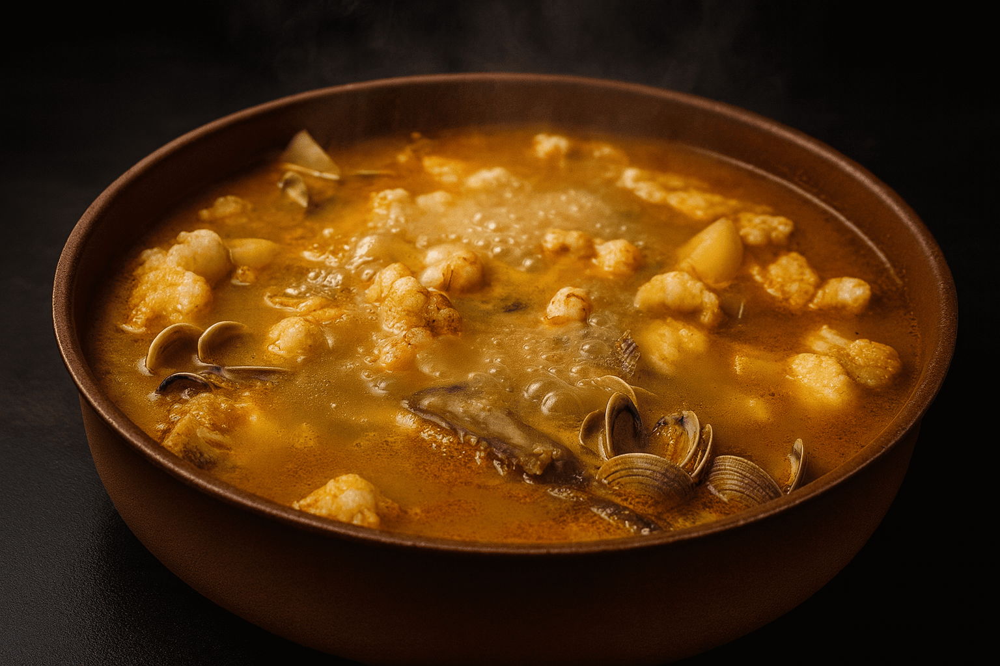 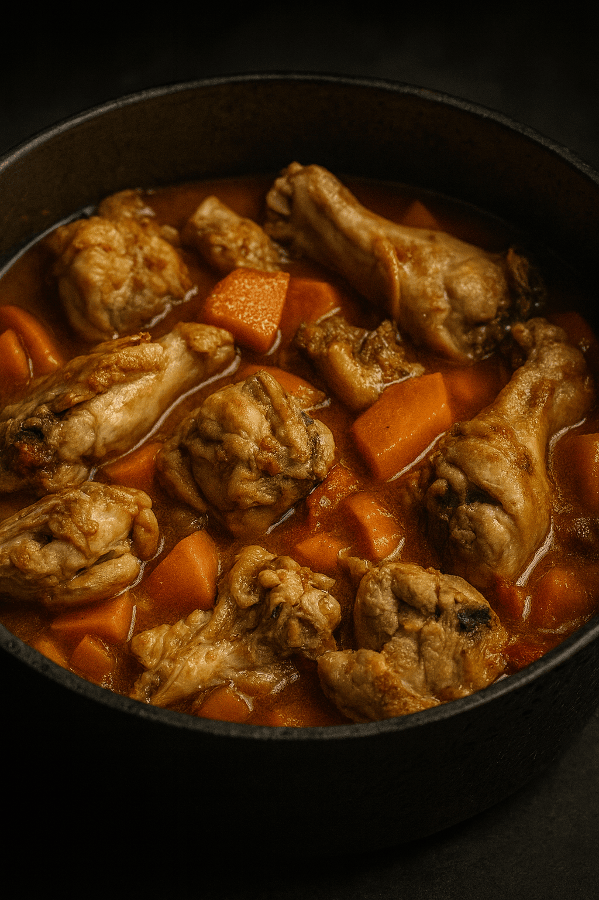 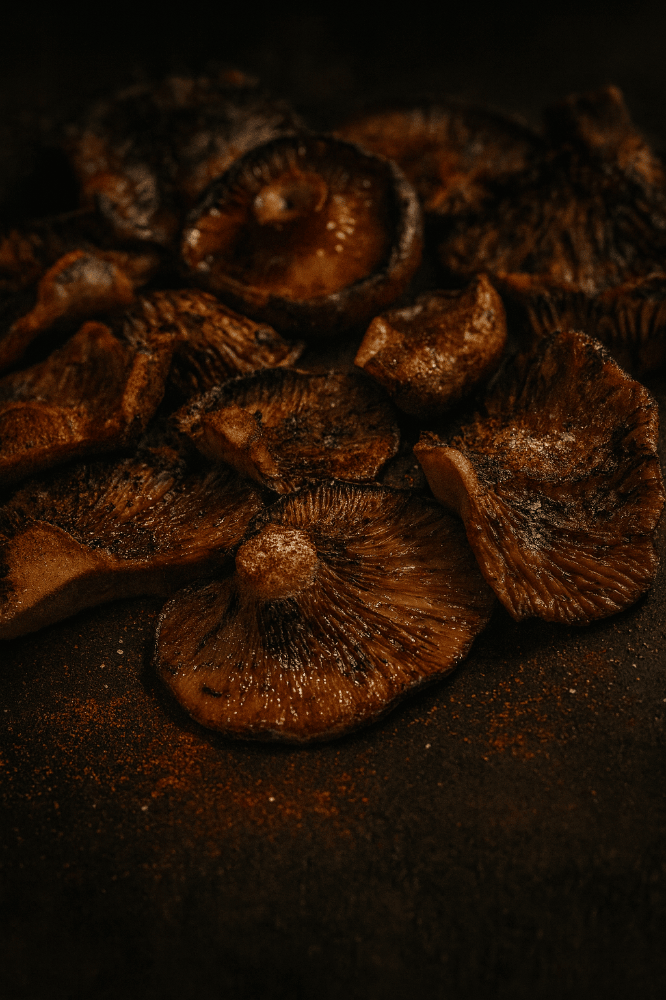 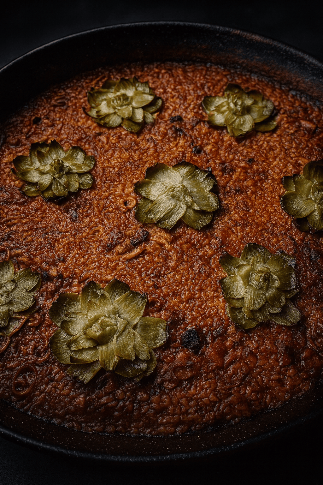 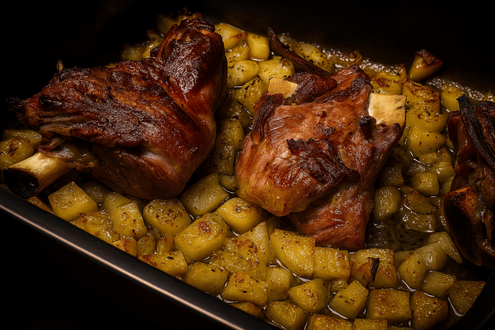 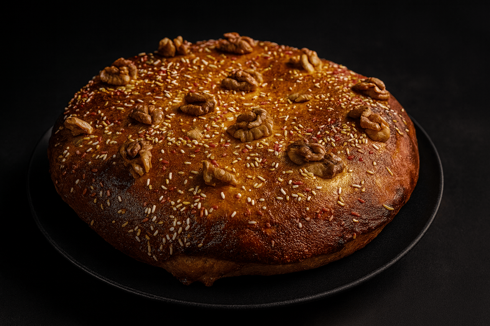 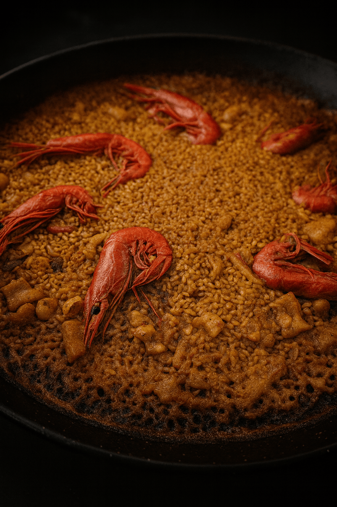 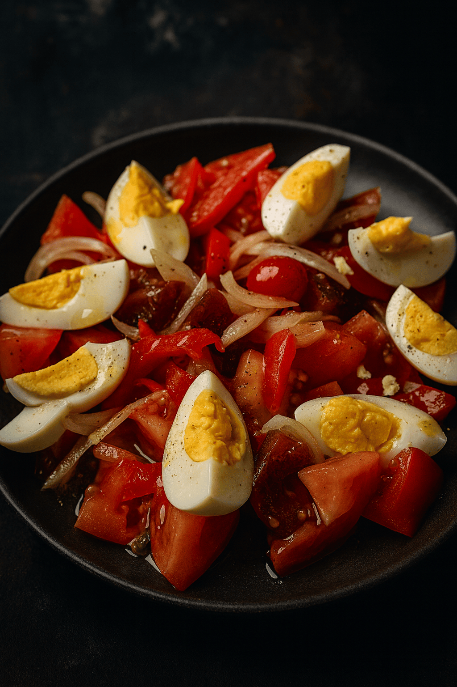 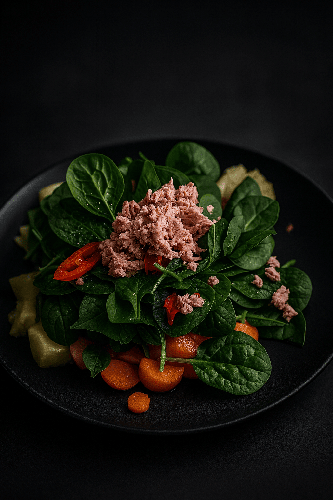Vídeo de presentación: cómo nació ¿Qué sopem?
Comparte tu receta
¿Tienes una receta favorita de tu día a día? Cuéntamela aquí:
emoji_objectsConsejo: para un mejor reconocimiento de voz, usa auriculares o cascos con micrófono.